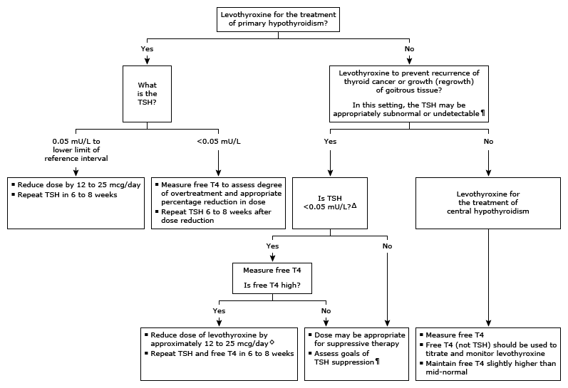

T4: thyroxine; TSH: thyroid-stimulating hormone.
* The normal range for TSH in nonpregnant adults is approximately 0.5 to 4.5 mU/L. Interpretation of a specific abnormal test result should be based upon the reference range reported with that result.
¶ The goal of TSH suppression varies depending on the clinical indication (eg, <0.05 mU/L for thyroid cancer with distant metastases, 0.1 to 0.4 mU/L for American Thyroid Association intermediate risk thyroid cancer).
Δ Using third-generation TSH chemiluminometric assays, which have detection limits of approximately 0.01 mU/L.
◊ The free T4 may be elevated when the TSH is purposely suppressed to subnormal levels in patients with thyroid cancer. If the free T4 is only slightly elevated, it may not be possible to reduce the dose and maintain the TSH in the goal range. If the free T4 level is very high, a larger initial reduction in the dose may be necessary to maintain the TSH at goal.